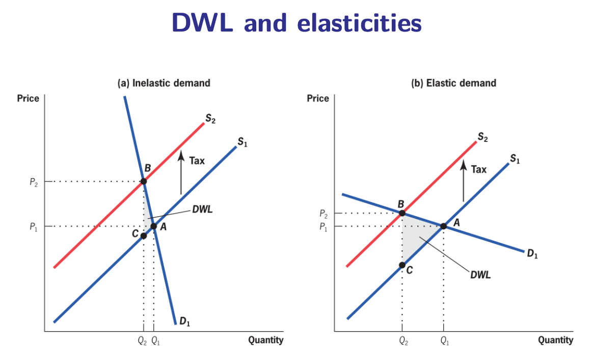
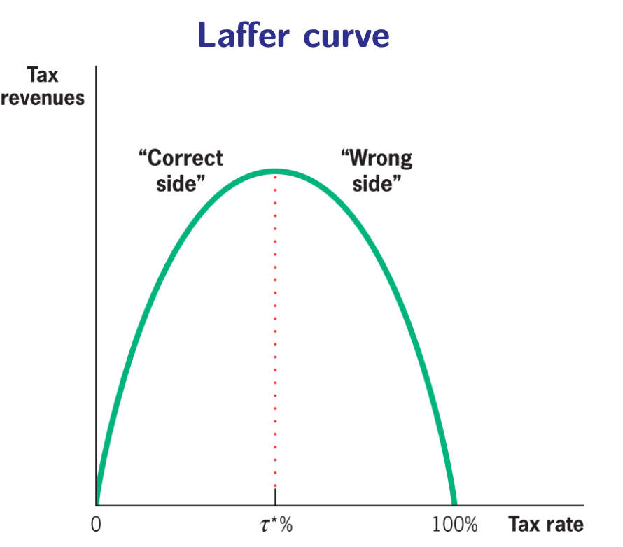

9.2 — Efficiency & Deadweight Loss of Taxation
Chapter 9: Taxation & Tax Incidence — The Cost of Taxing
What Does "Efficient" Taxation Mean?
Some taxes cause more economic distortion than others. An efficient tax system is one where the costs of the tax — beyond the revenue it raises — are as small as possible. In other words, the tax should raise the money the government needs while taking us as little as possible away from the efficient allocation of resources.
There are two main types of costs associated with any tax:
🏢 Administrative Costs
The practical cost of running the tax system itself — tax offices, enforcement, audits, paperwork, compliance.
📉 Welfare Costs (Deadweight Loss)
The economic damage caused by people changing their behavior to avoid the tax — buying less, working less, moving assets abroad.
Administrative Costs
Before a single euro reaches the government's bank account, someone must collect it. This collection process is expensive:
Direct Admin Costs
Running the tax collection office itself: hiring tax inspectors, building offices, running computer systems, training staff, conducting audits, pursuing tax evaders. These are the costs borne by the government.
Indirect Admin Costs
The costs imposed on taxpayers: record-keeping, filling out complex tax forms, hiring accountants and tax lawyers, dealing with transfer pricing rules for international companies. These costs are borne by citizens and businesses.
What makes administrative costs high or low?
- Complexity: The more deductions, special provisions, exceptions, and different brackets a tax has, the more expensive it is to administer. Simpler taxes are cheaper to run.
- Type of tax: A VAT (which requires tracking every stage of production) is more complex to administer than a simple sales tax (charged only at the final sale). Capital income taxes are harder to collect than labor income taxes because capital is easier to hide or move abroad.
- Reporting requirements: The balance between privacy (citizens don't want to share everything) and transparency (the government needs information to tax correctly) also adds costs.
Deadweight Loss (DWL) of Taxation
Deadweight loss (also called excess burden or deadweight burden) is the welfare loss created by a tax that goes above and beyond the tax revenue generated. It is the pure economic waste — the value destroyed because the tax caused people to make inefficient production and consumption choices that they would not have made without the tax.
In a supply-and-demand diagram, the DWL is represented as Harberger's triangle — the area between the old and new equilibrium quantities, bounded by the supply and demand curves:
$DWL = \frac{1}{2} \times t \times (Q^* - Q^E)$
Where $t$ is the tax amount, $Q^*$ is the original equilibrium quantity (no tax), and $Q^E$ is the new, lower quantity after the tax is imposed.
The key insight is that DWL depends on how much people change their behavior — which is measured by elasticity:

Inelastic Demand (Left)
Consumers barely react to the tax because they need the good (medicine, gasoline, cigarettes for addicts). Quantity falls only slightly ($Q_1 \to Q_2$ is small). DWL is small. The tax raises lots of revenue with little economic damage.
Elastic Demand (Right)
Consumers react dramatically — they switch to substitutes or simply stop buying. Quantity falls a lot ($Q_1 \to Q_2$ is large). DWL is large. The tax destroys a lot of economic activity relative to the revenue it generates.
Using the elasticity of demand $\eta$, we can derive a powerful formula:
$DWL = \frac{1}{2} \hat{t}^{\,2} \cdot p \cdot Q \cdot \eta$
Where $\hat{t} = t/p$ is the tax rate as a fraction of price. The crucial fact: DWL increases with the square of the tax rate. If you double the tax rate, DWL quadruples!
The Laffer Curve: When More Tax = Less Revenue
A direct consequence of the DWL logic is the famous Laffer Curve:

At a tax rate of 0%, the government collects zero revenue (nothing is taxed). As the rate increases, revenue rises — more percentage on the same base. But beyond a critical point $\tau^*$ (the revenue-maximizing rate), further increases in the tax rate reduce revenue. Why? Because people change their behavior so drastically (working less, evading, moving abroad) that the tax base itself shrinks faster than the rate increases. At a theoretical rate of 100%, revenue is again zero because nobody would bother earning anything if the government takes everything.
Two Golden Rules of Efficient Taxation
🎯 Tax Many Things a Little
Because DWL rises with the square of the tax rate, it is much better to have many small taxes than a few large ones. A single 40% tax causes 16 times more DWL than four separate 10% taxes on different goods would cause together.
Caveat: Administrative costs go up when you have many taxes — so there is a trade-off between efficiency (low DWL) and simplicity (low admin costs).
🎯 Tax Inelastic Goods
If there is no change in quantities consumed, the tax has zero efficiency cost. So from a pure efficiency standpoint, governments should tax goods that people cannot easily stop buying: water, basic food, housing, medicine.
But wait: This directly contradicts equity! Poor people spend a larger share of income on necessities. Taxing inelastic goods would be a brutally regressive tax that crushes the poor. This is the equity-efficiency trade-off in its purest form.
The Exception: Deadweight GAIN of Taxation
Everything above assumes the market was efficient to begin with. But what if there is already a market failure (an externality)? In that case, the tax does not create distortion — it corrects an existing one!
When a tax corrects a negative externality (pollution, smoking, carbon emissions), it achieves two benefits at once:
- Dividend 1: It eliminates (or reduces) the deadweight loss of the externality by pushing consumption toward the socially optimal level.
- Dividend 2: It raises revenue that can be used to subsidize positive externality-generating activities (education, healthcare, public transport, R&D).
Examples of taxes that generate a double dividend:
- Excise taxes on cigarettes: Reduce smoking (Dividend 1) and fund healthcare (Dividend 2).
- Carbon tax: Reduces emissions (Dividend 1) and funds green investment (Dividend 2).
- Pollution regulation fees: Force factories to internalize costs (Dividend 1) and fund environmental cleanup (Dividend 2).
These Pigouvian taxes can also be complemented with nudging — gentle behavioral pushes that do not involve taxation. For example, graphic cigarette labels (showing diseased lungs) make smokers emotionally uncomfortable without changing the price. Combining a tax (economic incentive) with a nudge (psychological incentive) is very effective.
Flexibility & Automatic Stabilizers
A good tax system must also be flexible — it should adapt to changing economic conditions without requiring new legislation each time.
The best example is automatic stabilizers. These are taxes that automatically dampen fluctuations in real GDP:
A progressive income tax naturally acts as a stabilizer:
- During a recession: Incomes fall → people drop into lower tax brackets → taxes fall automatically → citizens keep more of their income → spending is partially protected → the recession is softened.
- During a boom: Incomes rise → people climb into higher tax brackets → taxes rise automatically → the government takes more from the economy → overheating is dampened.
This happens without any politician needing to vote on anything. The tax code's progressive structure does the stabilization work automatically. This is why progressive income taxes are considered superior to flat taxes from a macroeconomic stability perspective.
Chapter 9.2 — The Big Picture:
- Two cost types: administrative costs (running the tax office) and DWL (welfare loss from behavioral changes).
- Harberger's triangle: $DWL = \frac{1}{2} t (Q^* - Q^E)$. Deeper formula: $DWL = \frac{1}{2} \hat t^2 p Q \eta$.
- DWL rises with the square of the tax rate → tax many things a little, not a few things a lot.
- DWL depends on elasticity → taxing inelastic goods is efficient but may be inequitable.
- Laffer Curve: Revenue first rises then falls with the tax rate. $\tau^*$ is the peak.
- Double dividend: Pigouvian taxes on externalities both correct the market failure AND raise revenue.
- Flexibility: Progressive income taxes act as automatic stabilizers, softening recessions and cooling booms without legislation.